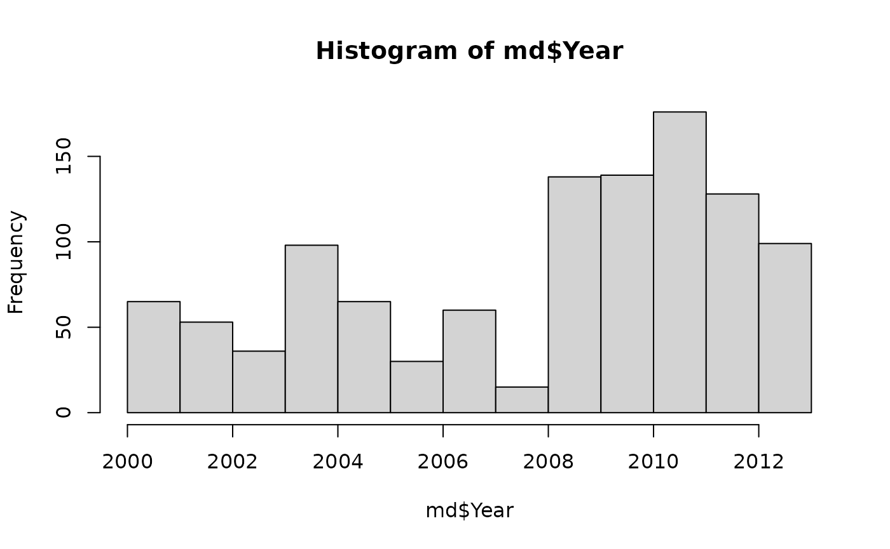
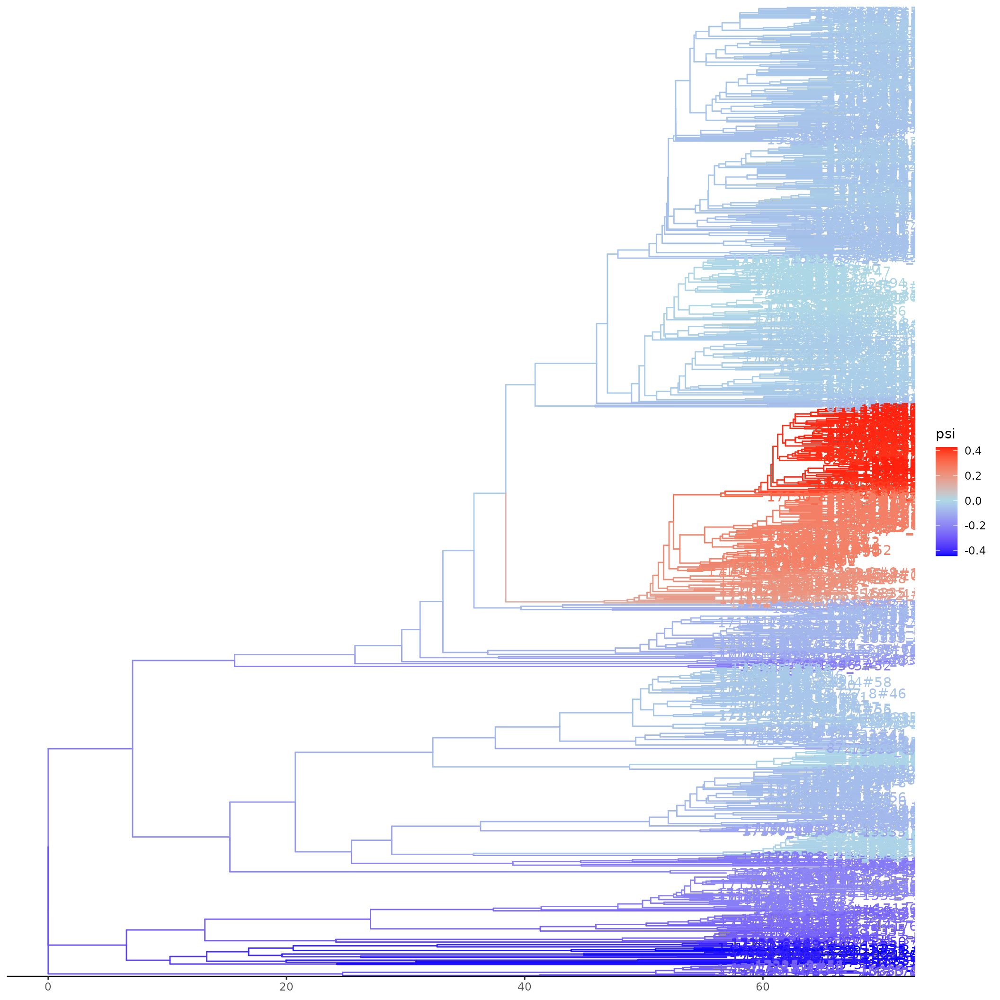
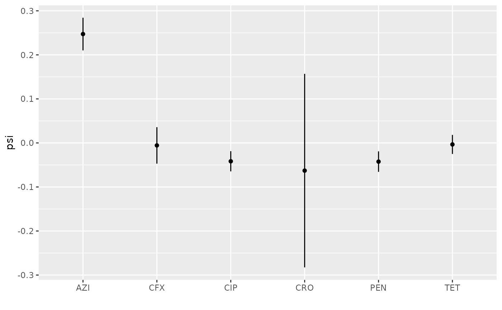

N. gonorrhea: Computing coalescent odds, identifying growing lineages, cluster identification & sample reweighting
Erik Volz
2025-09-24
ngono.RmdThis vignette demonstrates the main functions of cod
using data from 1,102 Neiseria gonorrhoeae genomes first described in 1. The data
used here were further analysed in 2 and this version of the data are available
at https://github.com/xavierdidelot/gonophylo.
library(cod)
tr <- ape::read.tree( system.file('extdata/grad2016-treedater-tr1.nwk', package='cod' ) )
md <- read.csv( system.file( 'extdata/grad2016-a2md.csv' , package='cod' ) ) This is a time-scaled phylogeny estimated with the
treedater R package.
tr ##
## Phylogenetic tree with 1102 tips and 1101 internal nodes.
##
## Tip labels:
## 17176_1#21, 15335_3#33, 15335_6#51, 15335_4#63, 15335_5#50, 8727_8#36, ...
##
## Rooted; includes branch length(s).Metadata includes the year of sample collection, clinic where the sample was collected, and resistance scores to several classes of antibiotics. For the purposes of this vignette, we will consider a score of “2” to represent resistance.
head(md)## ID PEN TET SPC CFX CRO CIP AZI Clinic Year
## 1 15335_2#1 2 2 0 2 0 2 1 POR 2012
## 2 15335_2#10 1 1 0 0 0 0 2 MIN 2005
## 3 15335_2#11 1 1 0 0 0 0 2 MIN 2005
## 4 15335_2#12 1 2 0 0 0 0 2 LVG 2006
## 5 15335_2#13 2 2 0 NA 0 2 2 CHI 2008
## 6 15335_2#14 2 2 0 NA 0 0 2 KCY 2008
hist( md$Year, title = '', ylabel = '', xlabel = 'Year' )
Estimating coalescent odds
The main function to estimate coalescent odds using weighted least
squares is codls:
f <- codls( tr )## logtau loss optimal
## 1 -4.0 200516.48
## 2 0.1 87477.40
## 3 4.2 86547.03 ***
## 4 8.3 86589.56
## 5 12.4 Inf
## 6 16.5 Inf
## 7 20.6 Inf
## 8 24.7 Inf
## 9 28.8 Inf
## 10 32.9 Inf
## 11 37.0 Inf
f## Genealogical placement GMRF model fit
##
## Phylogenetic tree with 1102 tips and 1101 internal nodes.
##
## Tip labels:
## 17176_1#21, 15335_3#33, 15335_6#51, 15335_4#63, 15335_5#50, 8727_8#36, ...
##
## Rooted; includes branch length(s).
## Range of coefficients:
## -0.442259845161674 0.426205484263409
## Precision parameter (log tau): 4.2The only required argument is a time-scaled phylogenetic tree. This
method models the correlation of coalescent odds between phylogenetic
lineages using a Gaussian-Markov Random Field which includes a precision
parameter logtau. If indepently estimated, this can be
provided to codls to speed up estimation, but if omitted,
logtau will be automatically estimated using the
tauprofile function. You can also speed up
codls by using multiple CPUs with the ncpu
argument.
Plotting the fit will display a tree with estimated log odds of
coalescence mapped by colour on to branches. Note that this requires the
ggtree package to be installed.
# Plot the tree with coalescent odds - handle potential ggtree issues
tryCatch({
plot(f)
}, error = function(e) {
cat("Plot generation failed due to ggtree compatibility issue:\n")
cat(e$message, "\n")
cat("Tree summary:\n")
print(f)
cat("\nCoalescent odds summary:\n")
print(summary(coef(f)))
})
The coalescent odds for each branch can be retrieved using
coef, e.g.:
coef(f)[1:4] ## [1] 0.003407523 0.005130719 0.005719041 0.006293182These are in the same order as nodes in the input tree.
Let’s merge the estimated coalescent odds back into the metadata for subsequent analysis:
fdf <- data.frame( tip = f$data$tip.label, psi = coef(f)[1:Ntip(tr)] )
md$tip <- md$ID
md <- merge( md, fdf, by = 'tip')
head( md )## tip ID PEN TET SPC CFX CRO CIP AZI Clinic Year psi
## 1 15335_2#1 15335_2#1 2 2 0 2 0 2 1 POR 2012 -0.04803569
## 2 15335_2#10 15335_2#10 1 1 0 0 0 0 2 MIN 2005 0.24893462
## 3 15335_2#11 15335_2#11 1 1 0 0 0 0 2 MIN 2005 0.24848434
## 4 15335_2#12 15335_2#12 1 2 0 0 0 0 2 LVG 2006 0.24821303
## 5 15335_2#13 15335_2#13 2 2 0 NA 0 2 2 CHI 2008 -0.02901797
## 6 15335_2#14 15335_2#14 2 2 0 NA 0 0 2 KCY 2008 -0.04413655Sample weights
If we examine the relationship between coalescent odds and where samples originated (Clinic) there are a few clinics with significantly higher values:
##
## COL LA2 SLC STL FBG GRB IND PON NOR LBC NYC CLE RIC KCY ALB DTR OKC DAL CIN ATL
## 3 3 3 3 4 6 6 6 7 8 8 11 11 13 14 14 14 16 22 25
## BHM MIA SEA DEN BAL HON POR MIN LAX ORA PHX SFO PHI CHI LVG SDG
## 28 28 29 30 33 35 48 51 53 62 64 67 69 71 85 152##
## Call:
## lm(formula = psi ~ Clinic, data = md)
##
## Residuals:
## Min 1Q Median 3Q Max
## -0.50273 -0.08555 -0.03763 0.02845 0.56277
##
## Coefficients:
## Estimate Std. Error t value Pr(>|t|)
## (Intercept) 0.0052379 0.0480984 0.109 0.9133
## ClinicATL 0.0037715 0.0600749 0.063 0.9500
## ClinicBAL -0.0297057 0.0574015 -0.518 0.6049
## ClinicBHM -0.0842535 0.0589083 -1.430 0.1529
## ClinicCHI 0.0139142 0.0526273 0.264 0.7915
## ClinicCIN -0.0352066 0.0615277 -0.572 0.5673
## ClinicCLE -0.1300334 0.0725111 -1.793 0.0732 .
## ClinicCOL -0.1405248 0.1144972 -1.227 0.2200
## ClinicDAL 0.0690866 0.0658615 1.049 0.2944
## ClinicDEN 0.0412778 0.0582501 0.709 0.4787
## ClinicDTR -0.0856221 0.0680215 -1.259 0.2084
## ClinicFBG -0.1115689 0.1020322 -1.093 0.2744
## ClinicGRB 0.1535391 0.0878153 1.748 0.0807 .
## ClinicHON -0.0043148 0.0569108 -0.076 0.9396
## ClinicIND -0.0488006 0.0878153 -0.556 0.5785
## ClinicKCY 0.0552351 0.0693172 0.797 0.4257
## ClinicLA2 0.1110863 0.1144972 0.970 0.3322
## ClinicLAX 0.0161195 0.0540792 0.298 0.7657
## ClinicLBC -0.0761099 0.0797622 -0.954 0.3402
## ClinicLVG -0.0550232 0.0519086 -1.060 0.2894
## ClinicMIA 0.0763673 0.0589083 1.296 0.1951
## ClinicMIN -0.0261175 0.0543003 -0.481 0.6306
## ClinicNOR -0.1240360 0.0833089 -1.489 0.1368
## ClinicNYC -0.0308319 0.0797622 -0.387 0.6992
## ClinicOKC -0.1496981 0.0680215 -2.201 0.0280 *
## ClinicORA 0.0320981 0.0532527 0.603 0.5468
## ClinicPHI -0.0270736 0.0527528 -0.513 0.6079
## ClinicPHX 0.0520299 0.0530992 0.980 0.3274
## ClinicPON -0.0770099 0.0878153 -0.877 0.3807
## ClinicPOR 0.0006079 0.0546646 0.011 0.9911
## ClinicRIC -0.0593261 0.0725111 -0.818 0.4134
## ClinicSDG 0.0291153 0.0502647 0.579 0.5625
## ClinicSEA -0.0522784 0.0585688 -0.893 0.3723
## ClinicSFO -0.0039325 0.0528854 -0.074 0.9407
## ClinicSLC -0.2952074 0.1144972 -2.578 0.0101 *
## ClinicSTL -0.2333512 0.1144972 -2.038 0.0418 *
## ---
## Signif. codes: 0 '***' 0.001 '**' 0.01 '*' 0.05 '.' 0.1 ' ' 1
##
## Residual standard error: 0.18 on 1066 degrees of freedom
## Multiple R-squared: 0.07834, Adjusted R-squared: 0.04808
## F-statistic: 2.589 on 35 and 1066 DF, p-value: 1.699e-06It is possible that this occurred because these locations were
sampled more intensively than other clinics which can artificially
increase coalescent rates because of higher local density of
co-circulating lineages. Samples can be down-weighted in
codls by passing the *weights* argument, which
should ameliorate bias from over-sampling if we know how much
over-sampling took place. Unfortunately, this is rarely known, so
cod includes a routine to consider a range of sample
weights and will identify the maximum weight such that there is no
longer a significant relationship between coalescent odds and a given
variable (usually geographic). Here we identify all samples from the
“MIA” clinical and pass these to the autoreweight
function.
# Clinics associated with psi :
signifclinics <- rownames(s$coefficients)[ s$coefficients[ , 4] < .1 ]
signifclinics <- substr(signifclinics, 7,9 )
# Subset of tips from clinics associated with psi :
reweighttips <- md$tip[ md$Clinic %in% signifclinics ]
arw <- autoreweight( f, reweighttips, wlb = 1e-2, wub = .5, res = 5, alpha = .02 )
f = arw$fit
arw$summary## sampleweight p
## 1 0.0100 1.554659e-05
## 2 0.1325 2.257137e-05
## 3 0.2550 3.269453e-05
## 4 0.3775 4.723516e-05
## 5 0.5000 6.804639e-05Note that in some cases, the association will not disappear even if the weight is zero because lineages surrounding the given samples also have higher coalescent odds. In these cases, the relationship is more likely to be authentic. That is exactly what we see here. Even when weighting these samples at 1% (unrealistically low) there remains a significant association with coalescent odds. Consequently, this fit will be identical to the original fit.
Antibiotic resistance
Here we examine the relationship between coalescent odds and antibiotic resistance. First, we replot the coloured tree alongside resistance phenotypes.
abxs <- c( 'PEN', 'TET', 'CFX', 'CRO', 'CIP', 'AZI')
abxmat <- as.matrix(md[, abxs ] )
abxmat <- apply( abxmat, 2, function(x) (x == "2") ) # The value of '2' is coded as abx resistant
rownames( abxmat ) <- md$tip
head(abxmat) ## PEN TET CFX CRO CIP AZI
## 15335_2#1 TRUE TRUE TRUE FALSE TRUE FALSE
## 15335_2#10 FALSE FALSE FALSE FALSE FALSE TRUE
## 15335_2#11 FALSE FALSE FALSE FALSE FALSE TRUE
## 15335_2#12 FALSE TRUE FALSE FALSE FALSE TRUE
## 15335_2#13 TRUE TRUE NA FALSE TRUE TRUE
## 15335_2#14 TRUE TRUE NA FALSE FALSE TRUE
abxmat[ is.na(abxmat) ] <- FALSE
# Try to create tree plot with heatmap, handle ggtree issues
tryCatch({
trpl <- plot(f) +
ggplot2::scale_color_gradient2( low='blue'
, mid = 'lightblue'
, high = 'red'
, midpoint = 0
, limits = range(fdf$psi)
, name = "ψ" )
trpl <- ggtree::gheatmap( trpl, abxmat, colnames_position='top', colnames_offset_y = -11)
trpl$data$label = '' # suppress tip labels
print(trpl)
}, error = function(e) {
cat("Tree plot with heatmap failed due to ggtree compatibility issue:\n")
cat(e$message, "\n")
cat("\nAntibiotic resistance summary:\n")
print(colSums(abxmat))
cat("\nSamples with highest coalescent odds:\n")
top_psi <- head(md[order(md$psi, decreasing=TRUE), c("tip", "psi", abxs)], 10)
print(top_psi)
})## Tree plot with heatmap failed due to ggtree compatibility issue:
## <ggtree> object properties are invalid:
## - @mapping must be <ggplot2::mapping>, not S3<data.frame>
##
## Antibiotic resistance summary:
## PEN TET CFX CRO CIP AZI
## 537 661 266 8 594 232
##
## Samples with highest coalescent odds:
## tip psi PEN TET CFX CRO CIP AZI
## 492 15335_7#38 0.4262055 1 2 0 0 0 2
## 512 15335_7#57 0.4262055 1 2 0 0 0 2
## 490 15335_7#36 0.4262054 1 2 0 0 0 2
## 482 15335_7#29 0.4259646 1 2 0 0 0 2
## 488 15335_7#34 0.4259645 1 2 0 0 0 2
## 479 15335_7#26 0.4257999 1 2 0 0 0 2
## 459 15335_6#93 0.4254206 1 0 0 0 0 1
## 700 17176_1#28 0.4254206 1 0 0 0 0 1
## 702 17176_1#3 0.4253203 1 0 0 0 0 1
## 698 17176_1#26 0.4251364 1 0 0 0 0 1It looks like higher coalescent odds are associated with AZI resistance and no other abx shows a positive effect. Let’s quantify this. Here we do a linear regression of coalescent odds on each abx and time, then infer the mean psi at the end of sampling (year 2013).
md$t <- md$Year - min(md$Year)
psi2013 <- sapply( abxs, function(x)
{
md1 <- md
md1$v <- md1[[x]] == 2
m = lm( psi ~ v*t , data = md1 )
predict( m, newdata= data.frame( psi = NA, v = TRUE, t = 13 ) , interval='confidence')
}) |> setNames( abxs )
ebdf <- as.data.frame( t( psi2013 ) )
colnames(ebdf) <- c( 'Median', '2.5%', '97.5%' )
ebdf$abx = rownames( ebdf )
ebdf <- ebdf[ order( ebdf$Median ) , ]
print( ebdf )## Median 2.5% 97.5% abx
## CRO -0.062852959 -0.28257319 0.15686727 CRO
## PEN -0.042395359 -0.06566536 -0.01912536 PEN
## CIP -0.041630966 -0.06456462 -0.01869732 CIP
## CFX -0.005595061 -0.04700795 0.03581783 CFX
## TET -0.003377564 -0.02501186 0.01825674 TET
## AZI 0.247253178 0.21017410 0.28433226 AZIHere the result is plotted:
peb = ggplot2::ggplot(ebdf, ggplot2::aes(x = abx, y = Median, ymin = `2.5%`, ymax = `97.5%`) ) + ggplot2::geom_errorbar(width=0) +
ggplot2::geom_point() +
ggplot2::labs(y = 'psi', x = '' )
peb
In fact, resistance to AZI expanded rapidly after these data were collected, from a prevalence of 0.6% in 2013 to 4.5% in 20173. This is the most rapid growth among these antibiotics.
Phylogenetic clusters
An alternative way to look at coalescent odds is in terms of
phylogenetic clusters. These are clades defined by a threshold change in
coalescent odds along a lineage, from low to high values. There is some
subjectivity in the choice of clustering thresholds and the best choice
depends on the application, however cod provides a method
based on the Calinski-Harabasz
index.
## threshold CH optimal
## 1 0.03000000 1502518.1
## 2 0.04947368 650599.0
## 3 0.06894737 807982.9
## 4 0.08842105 902511.2
## 5 0.10789474 946716.4
## 6 0.12736842 1334924.7
## 7 0.14684211 1532793.1
## 8 0.16631579 1641530.8 ***
## 9 0.18578947 786818.6
## 10 0.20526316 950306.2
## 11 0.22473684 885988.9
## 12 0.24421053 885988.9
## 13 0.26368421 1215831.1
## 14 0.28315789 1215831.1
## 15 0.30263158 1215831.1
## 16 0.32210526 1215831.1
## 17 0.34157895 1215831.1
## 18 0.36105263 1215831.1
## 19 0.38052632 1215831.1
## 20 0.40000000 1215831.1Here, we compute clusters using the maximum CH index. Note that if no
threshold is provided, computeclusters will automatically
select the optimal threshold:
# Using optimal threshold from CH index
chdf = computeclusters(f, chis$threshold[which.max(chis$CH)] )
# Alternatively, let computeclusters automatically select optimal threshold:
# chdf = computeclusters(f)
head(chdf)## node tip.label clusterid psi tip
## 1 1088 15335_5#48 1 -0.4209262 TRUE
## 2 1089 15335_3#80 1 -0.4311232 TRUE
## 3 1089 15335_3#80 1 -0.4311232 TRUE
## 4 2191 1 -0.3838401 FALSE
## 5 1065 17176_1#39 2 -0.4356554 TRUE
## 6 1066 8289_2#72 2 -0.4411569 TRUEPlotting these shows that one cluster very closely matches a clade
with high levels of AZI resistance and high coalescent odds, so an
alternative way to analyse these data would be to identify clusters with
high coalescent odds and then characterise resistance patters within
these clusters. The clusters can be visualised by running
plotclusters(f, chdf).
# Cluster summary statistics
cat("Cluster summary:\n")## Cluster summary:##
## 1 2 3 4 5 6 7 8 9 10 11 12 13 14
## 4 46 158 270 104 88 888 910 145 3 15 457 1 51
cat("\nCluster statistics (coalescent odds by cluster):\n")##
## Cluster statistics (coalescent odds by cluster):
cluster_stats <- aggregate(chdf$psi, by=list(chdf$clusterid),
function(x) c(mean=mean(x, na.rm=TRUE),
sd=sd(x, na.rm=TRUE),
n=length(x)))
names(cluster_stats) <- c("cluster", "psi_stats")
print(cluster_stats)## cluster psi_stats.mean psi_stats.sd psi_stats.n
## 1 1 -0.416753158 0.022462421 4.000000000
## 2 2 -0.416514088 0.019188764 46.000000000
## 3 3 -0.239161430 0.039221155 158.000000000
## 4 4 -0.071805631 0.012269594 270.000000000
## 5 5 -0.017465734 0.018791471 104.000000000
## 6 6 -0.013355858 0.010180204 88.000000000
## 7 7 0.315540443 0.091935636 888.000000000
## 8 8 -0.032857085 0.016487044 910.000000000
## 9 9 -0.094540079 0.021518781 145.000000000
## 10 10 -0.154503030 0.018780184 3.000000000
## 11 11 -0.216450242 0.009101256 15.000000000
## 12 12 -0.076401526 0.064003733 457.000000000
## 13 13 -0.277591516 NA 1.000000000
## 14 14 -0.297566015 0.018720376 51.000000000